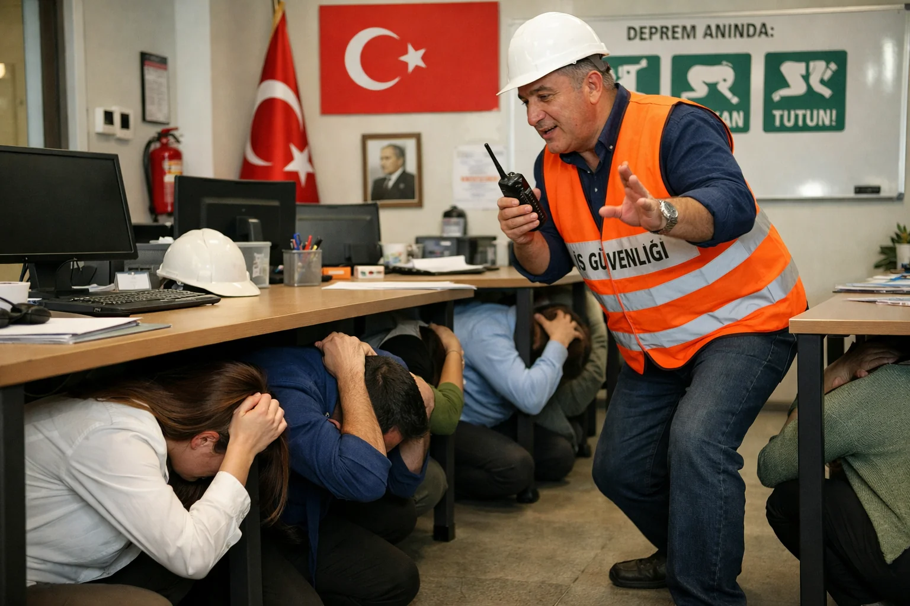

İşyerinde Deprem Tatbikatı Nasıl Yapılır?
6331 sayılı İş Sağlığı ve Güvenliği Kanunu gereği tüm işyerleri yılda en az 1 kez deprem tatbikatı yapmak zorunda. Ancak "tatbikat" çoğu kurumda simge kalıyor. Gerçekten hayat kurtaran bir tatbikat nasıl yapılır?
Yasal Zorunluluk
6331 sayılı kanun ve ilgili yönetmelikler gereği: Tehlike sınıfına göre yılda en az 1-2 tatbikat zorunludur. İşveren bu konuda sorumludur. Cezai yaptırım var — tatbikatsız veya usulsüz yapılan işyerlerine 30.000-300.000 TL ceza.
Ön Hazırlık
Tatbikat tarihinden 1 hafta önce: 1. Tüm personele bilgilendirme (mail/duyuru). 2. İSG uzmanı eşliğinde ekip kurun: koordinatör, kat sorumluları, ilk yardımcılar. 3. Toplanma alanını belirleyin. 4. Kaçış rotalarını işaretleyin — panonlara talimat asın. 5. Engelli personel için özel plan yapın.
Tatbikat Günü Adım Adım
1. Siren (sabah 10:00'da ideal) — hazırlık sesi. 2. Çök-Kapan-Tutun (30 saniye) — personel masanın yanına çöker, kafayı korur. 3. Sarsıntı bitti anonsu — bekleyin. 4. Tahliye sinyali — personel kaçış rotası üzerinden dışarı çıkar. ASANSÖR KULLANILMAZ. 5. Toplanma alanı — her bölüm kendi toplanma yeri bilsin. 6. Sayım — her bölüm sorumlusu personel sayımı yapar. 7. Değerlendirme toplantısı — 30 dakika sonra tatbikat raporu.
Personel Eğitimi
Tatbikat tek başına yetmez. Personele düzenli olarak: a) Çök-kapan-tutun eğitimi. b) İlk yardım temeli (AED, KPR). c) Yangın söndürücü kullanımı. d) Kaçış rotası ezberi. e) Toplanma alanı tanımı. Yılda 1 kez 4 saatlik İSG oryantasyonu önerilir.
Engelliler ve Özel Durumlar
Tekerlekli sandalyeli, görme engelli, işitme engelli personel için özel prosedür. Tahliye asistanı ataması — her engelli personel için bir yardımcı. Evakuasyon koltuğu (3-5 kişilik işyerlerinde 1 tane zorunlu). Görsel + sesli + titreşimli uyarı — her engel türü için uyarı yöntemi.
Değerlendirme Raporu
Tatbikat sonrası rapor: a) Katılan personel sayısı. b) Tahliye süresi (ideali 3-5 dakika). c) Eksik veya hatalı davranışlar. d) Eksik ekipman (yangın söndürücü, aydınlatma). e) Bir sonraki tatbikat için öneriler. Raporu İSG dosyasına eklemek yasal zorunluluktur.